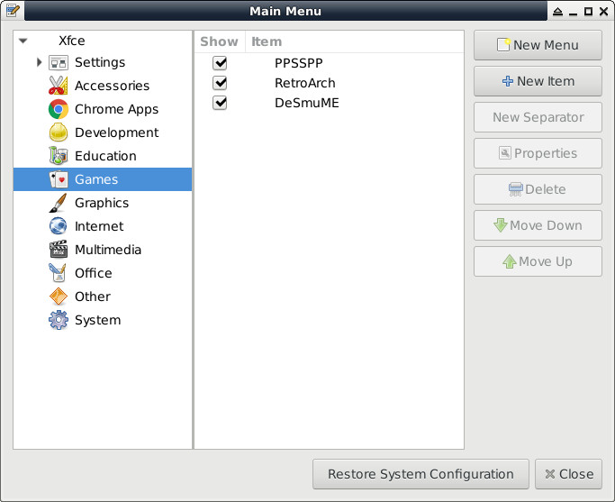
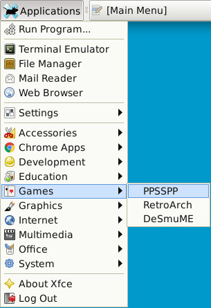
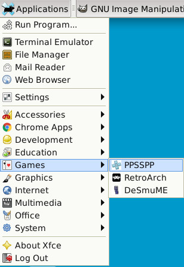

雖然編輯Menu的方式有很多種，不過司徒覺得如下的方式最方便：
$ sudo apt-get install alacarte $ alacarte


$ ls vim .local/share/applications/alacarte*
alacarte-made.desktop
alacarte-made-1.desktop
alacarte-made-2.desktop
$ vim .local/share/applications/alacarte-made.desktop
[Desktop Entry]
Comment=RetroArch
Terminal=false
Name=RetroArch
Exec=/usr/local/games/retroarch/retroarch
Type=Application
Icon=/usr/share/icons/Tango/48x48/retroarch.png
完成
